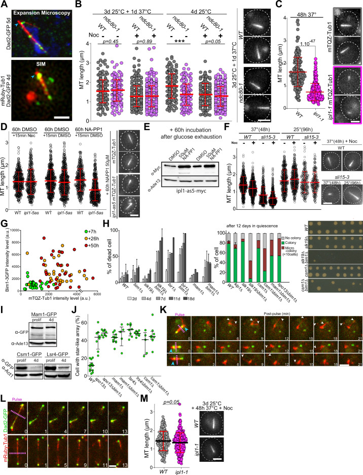

quiescent nuclear microtubule bundle
A stable monopolar bundle of parallel nuclear microtubules formed during glucose-exhaustion-induced quiescence, characterized in Saccharomyces cerevisiae. The bundle extends from the nuclear face of the spindle pole body and reorganizes kinetochore and centromere distribution; it is distinct from the antiparallel cytoplasmic quiescent-cell bundle of fission yeast. [DOI:10.1083/jcb.201306075]

NCBITaxon:4932) · Damien Laporte, Aurelie Massoni-Laporte, Charles Lefranc, Jim Dompierre, David Mauboules, Emmanuel T Nsamba, Anne Royou, Lihi Gal, Maya Schuldiner, Mohan L Gupta, et al.; CC BY, via PubMed Central · CC_BY_4_0 · source: PMC PMC10963028.1 fig3s1 · DOI:10.7554/eLife.89958Synonyms: Q-nMT bundle; quiescent-cell nuclear microtubule bundle
Part of: nucleus (GO:0005634); GO:0015630 — microtubule cytoskeleton (no local record)
Has part: nuclear microtubule (GO:0005880)
Components
| Component | Type | Part of / acts on | Grounding | Genes | Stoichiometry | Essential | Role |
|---|---|---|---|---|---|---|---|
| Alpha tubulin | Protein | part of | InterPro:IPR002452 | TUB1, TUB3 | UNKNOWN | Alpha-tubulin subunits of the nuclear bundle; Tub1 and Tub3 colocalize, with distinct contributions to assembly.
| |
| Beta tubulin | Protein | part of | InterPro:IPR002453 | UNKNOWN | Beta partner class of the alpha/beta microtubule polymer; no beta-isotype localization assay is inferred.
| ||
| XMAP215 | Protein | part of | InterPro:IPR045110 | STU2 | UNKNOWN | Microtubule-associated regulator localized at both bundle ends and occasional intermediate puncta.
| |
| Bik1-like CLIP-170 microtubule-associated protein | Protein | part of | Reviewed label only (reviewed name; no accession asserted) | BIK1 | UNKNOWN | Resident microtubule-associated protein detected at both ends of the quiescent array.
| |
| Microtubule-associated protein RP/EB | Protein | part of | InterPro:IPR027328 | BIM1 | DISPENSABLE | Bundle-associated EB protein; single BIM1 deletion permits stable bundles, with conditional defects when other factors are removed.
| |
| Kar3-like kinesin-14 motor | Protein | part of | Reviewed label only (reviewed name; no accession asserted) | KAR3 | UNKNOWN | Resident motor contributing to early normal bundle assembly; motor-driven crosslinking is not directly resolved.
| |
| Kinesin-like protein KIF11-like | Protein | part of | InterPro:IPR047149 | CIN8, KIP1 | UNKNOWN | Resident kinesin-5 class with distinct activities: Cin8 affects phase-II bundle thickness, whereas Kip1 supports full stabilization.
| |
| Bir1-like chromosomal passenger protein | Protein | part of | Reviewed label only (reviewed name; no accession asserted) | BIR1 | UNKNOWN | Resident chromosomal passenger protein distributed along the bundle and enriched at its distal end.
| |
| Sli15-like inner centromere protein | Protein | part of | Reviewed label only (reviewed name; no accession asserted) | SLI15 | UNKNOWN | Resident INCENP-like passenger protein associated with assembly and stabilization of the bundle.
| |
| Slk19-like microtubule-associated protein | Protein | part of | Reviewed label only (reviewed name; no accession asserted) | SLK19 | UNKNOWN | Resident bundle-end protein contributing to mature bundle dimensions and stability.
|
Organism-specific protein examples
Named proteins in which each component's role was established, with the organism the evidence comes from. The component above is the taxon-agnostic family; these are the specific entries behind it.
Alpha tubulin
| Accession | Protein | Gene | Organism | Entry |
|---|---|---|---|---|
UniProtKB:P09733 | Tubulin alpha-1 chain | TUB1 | Saccharomyces cerevisiae S288C (NCBITaxon:559292) | REVIEWED |
Role and evidence (2 references)Reference-sequence exemplar; the accession does not assert that the exact reference stock was imaged.
| ||||
UniProtKB:P09734 | Tubulin alpha-3 chain | TUB3 | Saccharomyces cerevisiae S288C (NCBITaxon:559292) | REVIEWED |
Role and evidence (2 references)Reference-sequence exemplar; the accession does not assert that the exact reference stock was imaged.
| ||||
XMAP215
| Accession | Protein | Gene | Organism | Entry |
|---|---|---|---|---|
UniProtKB:P46675 | Protein STU2 | STU2 | Saccharomyces cerevisiae S288C (NCBITaxon:559292) | REVIEWED |
Role and evidence (2 references)Reference-sequence exemplar; the accession does not assert that the exact reference stock was imaged.
| ||||
Bik1-like CLIP-170 microtubule-associated protein
| Accession | Protein | Gene | Organism | Entry |
|---|---|---|---|---|
UniProtKB:P11709 | Nuclear fusion protein BIK1 | BIK1 | Saccharomyces cerevisiae S288C (NCBITaxon:559292) | REVIEWED |
Role and evidence (2 references)Reference-sequence exemplar; the accession does not assert that the exact reference stock was imaged.
| ||||
Microtubule-associated protein RP/EB
| Accession | Protein | Gene | Organism | Entry |
|---|---|---|---|---|
UniProtKB:P40013 | Protein BIM1 | BIM1 | Saccharomyces cerevisiae S288C (NCBITaxon:559292) | REVIEWED |
Role and evidence (2 references)Reference-sequence exemplar; the accession does not assert that the exact reference stock was imaged.
| ||||
Kar3-like kinesin-14 motor
| Accession | Protein | Gene | Organism | Entry |
|---|---|---|---|---|
UniProtKB:P17119 | Kinesin-like protein KAR3 | KAR3 | Saccharomyces cerevisiae S288C (NCBITaxon:559292) | REVIEWED |
Role and evidence (2 references)Reference-sequence exemplar; the accession does not assert that the exact reference stock was imaged.
| ||||
Kinesin-like protein KIF11-like
| Accession | Protein | Gene | Organism | Entry |
|---|---|---|---|---|
UniProtKB:P27895 | Kinesin-like protein CIN8 | CIN8 | Saccharomyces cerevisiae S288C (NCBITaxon:559292) | REVIEWED |
Role and evidence (2 references)Reference-sequence exemplar; the accession does not assert that the exact reference stock was imaged.
| ||||
UniProtKB:P28742 | Kinesin-like protein KIP1 | KIP1 | Saccharomyces cerevisiae S288C (NCBITaxon:559292) | REVIEWED |
Role and evidence (2 references)Reference-sequence exemplar; the accession does not assert that the exact reference stock was imaged.
| ||||
Bir1-like chromosomal passenger protein
| Accession | Protein | Gene | Organism | Entry |
|---|---|---|---|---|
UniProtKB:P47134 | Chromosomal passenger complex protein BIR1 | BIR1 | Saccharomyces cerevisiae S288C (NCBITaxon:559292) | REVIEWED |
Role and evidence (2 references)Reference-sequence exemplar; the accession does not assert that the exact reference stock was imaged.
| ||||
Sli15-like inner centromere protein
| Accession | Protein | Gene | Organism | Entry |
|---|---|---|---|---|
UniProtKB:P38283 | Inner centromere protein SLI15 | SLI15 | Saccharomyces cerevisiae S288C (NCBITaxon:559292) | REVIEWED |
Role and evidence (2 references)Reference-sequence exemplar; the accession does not assert that the exact reference stock was imaged.
| ||||
Slk19-like microtubule-associated protein
| Accession | Protein | Gene | Organism | Entry |
|---|---|---|---|---|
UniProtKB:Q08581 | Kinetochore protein SLK19 | SLK19 | Saccharomyces cerevisiae S288C (NCBITaxon:559292) | REVIEWED |
Role and evidence (2 references)Reference-sequence exemplar; the accession does not assert that the exact reference stock was imaged.
| ||||
Canonical examples
NCBITaxon:4932Saccharomyces cerevisiae — Budding yeast studied by fluorescence, expansion microscopy, laser ablation and perturbations; the 2013 defining study additionally supplies TEM. Strain backgrounds differ among assays; no all-fungi prevalence is asserted. [DOI:10.7554/eLife.89958]
Functions
- Quiescent nuclear reorganization — The nuclear array supports relocation of kinetochore-centromere clusters away from the SPB and displacement of the nucleolus.
DOI:10.1083/jcb.201306075Kinetochore and centromere localization, plus no-array mutants, associate array formation with nuclear reorganization; chromosomes and nucleolus are not treated as bundle constituents.
- Support of quiescent survival and recovery — Bundle formation contributes to survival and subsequent colony formation in the tested glucose-exhaustion conditions.
DOI:10.1083/jcb.201306075Array-defective mutants lose viability and regrowth capacity; pleiotropic effects limit a uniquely bundle-specific causal claim.DOI:10.7554/eLife.89958Early nocodazole prevents formation and impairs survival/regrowth, whereas late treatment of stabilized bundles does not have the same effect. This narrows but does not eliminate off-target explanations.
Mechanism graphs
Glucose exhaustion and early bundle assembly (ASSEMBLY)
| Subject | Predicate | Object | Evidence |
|---|---|---|---|
| Glucose exhaustion | stimulates | Q-nMT bundle assembly |
|
| Functional kinetochore-microtubule attachment | supports | Q-nMT bundle assembly |
|
Regulated disassembly on quiescence exit (DISASSEMBLY)
| Subject | Predicate | Object | Evidence |
|---|---|---|---|
| Glucose refeeding | stimulates | Q-nMT bundle disassembly |
|
| Kinesin-like protein KIP3 | supports | Q-nMT bundle disassembly |
|
| Mitotic spindle-associated protein SHE1 | supports | Q-nMT bundle disassembly |
|
| Q-nMT bundle disassembly | supports | Spindle pole body separation |
|
Discussions
- CURATION_TODO (RESOLVED): Keep the nuclear Q-nMT identity separate from generic nuclear microtubules and cytoplasmic Q-MT.
- CURATION_TODO (OPEN): Find exact whole-protein families for five label-only resident classes.
- CURATION_TODO (RESOLVED): Separate bundle composition from its nucleation site and attached chromosomal assemblies.
- CURATION_TODO (RESOLVED): Do not turn genetic requirements or expression into residence.
- CURATION_TODO (RESOLVED): Keep assay sensitivity and individual deletion effects explicit.
- KNOWLEDGE_GAP (OPEN): Resolve stabilization without upgrading models into measured mechanisms.
- CURATION_TODO (RESOLVED): Avoid mixing biological dimensions, experimental expansion and control cells.
- CURATION_TODO (RESOLVED): Keep taxonomy, dataset coverage and licence claims bounded.
Evidence
DOI:10.1083/jcb.201306075Laporte et al. (2013), PMID 24247429, native PMC3840927.1 Results, Discussion and relevant Methods: defining nuclear-array morphology, localization, perturbation and exit evidence.DOI:10.7554/eLife.89958Laporte et al. (2024), PMID 38527106, native PMC10963028.1 Results, Discussion and relevant Methods; Figure 3 supplement 1 and Figure 4 supplement 1 visually inspected.GO:0099070Non-obsolete static microtubule bundle term is broader than Q-nMT. Its Q-MT narrow synonyms concern the distinct fission-yeast cytoplasmic bundle.GO:0005634Native nucleus term supports nuclear compartment parthood.GO:0015630— microtubule cytoskeleton Native microtubule cytoskeleton term supports the encompassing framework.GO:0005880Native nuclear microtubule term describes the constituent polymers, not the whole multi-filament array.
Curation history
2026-10-05T16:36:00Zcodex · CREATED_RECORD — Scaffolded by scripts/new_record.py2026-10-05T16:38:33Zcodex · EXPANDED_RECORD — Added ten component classes, eleven native-verified protein examples, bounded assembly/disassembly graphs, an inspected CC BY 4.0 figure, and explicit identity, component-boundary and evidence limitations.
Source: data/structures/cytoskeleton/quiescent_nuclear_microtubule_bundle.yaml